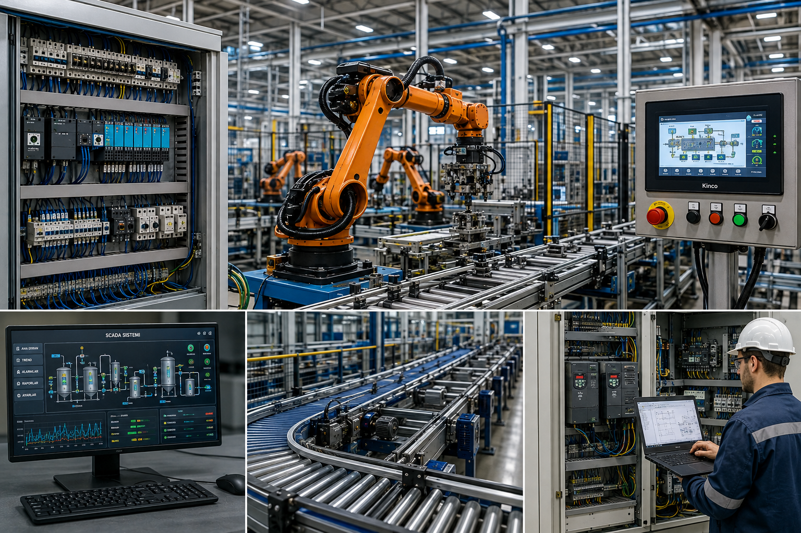

Fabrika otomasyonu, makine modernizasyonu, SCADA sistemleri, konveyör otomasyonu, servo sistemleri ve endüstriyel kontrol projelerinde profesyonel çözümler sunuyoruz. Üretim süreçlerinizi daha verimli, güvenli ve sürdürülebilir hale getirmek için modern otomasyon teknolojilerini işletmenize entegre ediyoruz.

Üretim süreçlerinizi daha verimli, güvenli ve sürdürülebilir hale getiren profesyonel otomasyon çözümleri sunuyoruz.
Üretim tesisleri için PLC tabanlı otomasyon sistemleri tasarlıyor ve devreye alıyoruz.
Konveyör hatlarının otomasyonu, senkronizasyonu ve hız kontrolünü gerçekleştiriyoruz.
Eski makineleri yeni nesil otomasyon sistemleri ile modern hale getiriyoruz.
Tesisinizi bilgisayar üzerinden izleyebileceğiniz SCADA çözümleri geliştiriyoruz.
Hassas hareket kontrolü gerektiren makineler için servo çözümleri sunuyoruz.
Endüstriyel sensörlerin seçimi, montajı ve otomasyon sistemlerine entegrasyonunu sağlıyoruz.
Üretim süreçlerini analiz ederek daha verimli ve kontrollü otomasyon çözümleri geliştiriyoruz.
PLC, HMI ve saha ekipmanlarını entegre ederek güvenilir kontrol sistemleri oluşturuyoruz.
Endüstriyel otomasyon projeleri için keşif, planlama ve teknik danışmanlık hizmeti sunuyoruz.
Üretim süreçlerini hızlandıran, güvenliği artıran ve verimliliği yükselten otomasyon çözümleri geliştiriyoruz.
Endüstriyel tesislerde üretim hatlarına uygun otomasyon sistemleri geliştiriyoruz.
Mevcut makineleri yeni nesil otomasyon sistemleriyle modernize ederek üretim verimliliğini artırıyoruz.
Süreç analizleri yaparak üretim kayıplarını azaltan çözümler sunuyoruz.
Endüstriyel güvenlik standartlarına uygun, güvenilir otomasyon sistemleri tasarlıyoruz.
Üretim süreçlerini bilgisayar üzerinden izleyebileceğiniz gelişmiş SCADA çözümleri sunuyoruz.
Proje sonrası bakım, güncelleme ve teknik destek hizmetlerimizle işletmenizin yanında oluyoruz.
Fabrika otomasyonu, SCADA sistemleri, konveyör otomasyonu ve endüstriyel kontrol çözümlerini Bandırma ve çevresindeki işletmelere sunuyoruz.
Fabrika otomasyonu, konveyör sistemleri, SCADA, servo sistemleri, sensör sistemleri, proses otomasyonu ve endüstriyel kontrol çözümleri sunuyoruz.
Fabrika otomasyonu, SCADA sistemleri ve makine modernizasyonu hakkında en sık sorulan sorular.
Fabrika otomasyonu, makine modernizasyonu ve endüstriyel kontrol sistemlerinde kaliteli mühendislik, doğru planlama ve sürdürülebilir çözümler sunuyoruz.